This my datasets representing the 9 Workers: Years of Experience,Test and Interview Scores and the Corresponding Salaries.I would like to determine how the Experience Or Scores Affect the Dependent Variable which is the SALARY and How To Predict the Salary of Given Independent Variable (Experience,Test and Oral Score)
So this is my datasets.
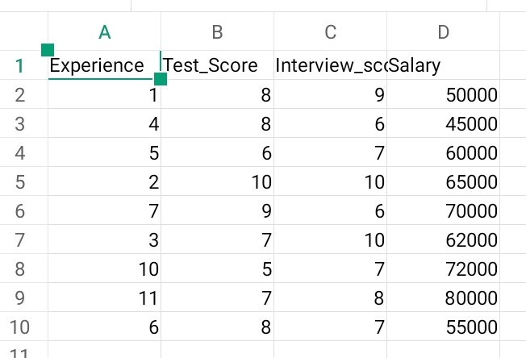This is our formula' (SALARY=m1*experience+m2*testscore*intscore+b/intercept) m1,m2 and m3 are the coefficients.
So we Import the Matplotlib for plotting,Pandas for reading the csv,Sklearn for Linear Model.We use (df=pd.read_csv)to read the file or datasets
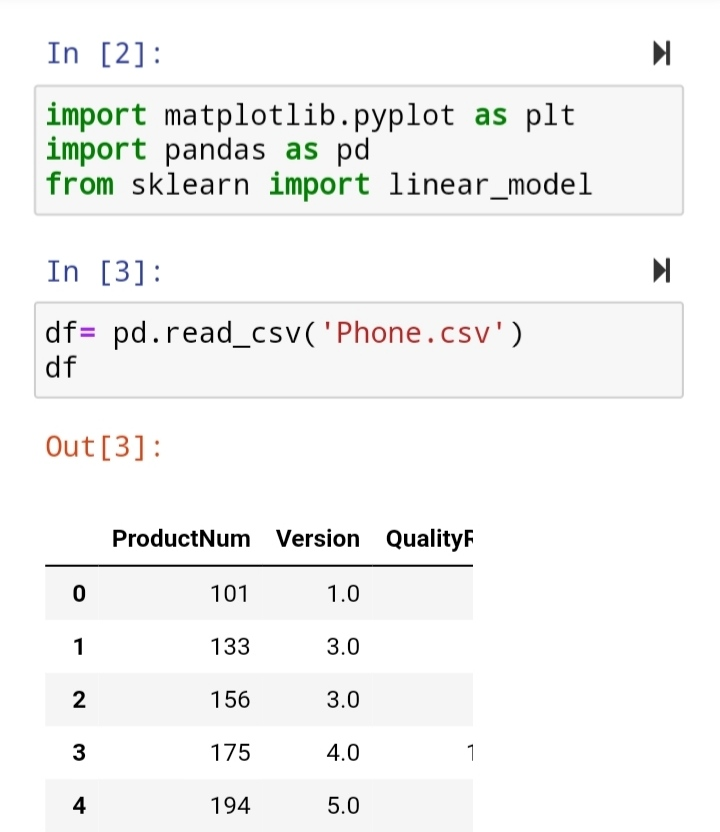So we successfully loaded and read the datasets.We see that the datasets are complete ,so we don't need to fill any row or columns.
Using the (reg.linear_model.LinearRegression) and the (reg.fit),we successfully loaded the Linear Regression Model.
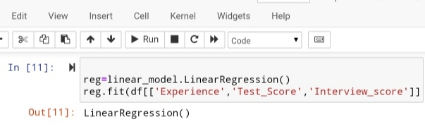Next we put the (reg.coef_) to get the coefficients based on the equation formula of the Linear Regression. We have three independent variable the EXPERIENCE,TEST AND INTERVIEW SCORES.The three coefficient are:(-28.87),(607.70),(1013.47).
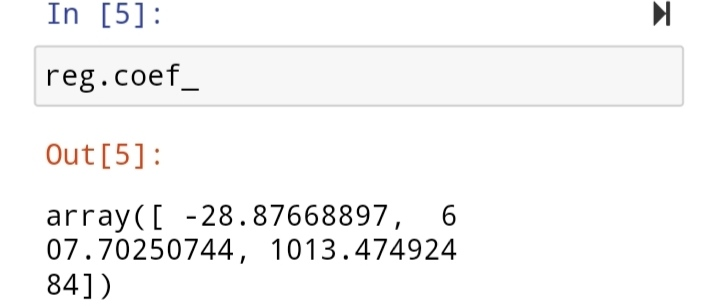We put the (reg.intercept_) to get the intercept value of the data.The intercept value is 3704.05
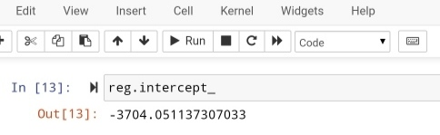After we got the Coefficients and the Intercept we now can Predict the Salary of Given Independent Variable.So we Use (reg.predict([[]])).
Example: Experience:12years Test Score:8/10 , Interview Score: 7/10
So we type like this: reg.predict([[12,8,7]]),this will help us to predict the salary which is (83,821).
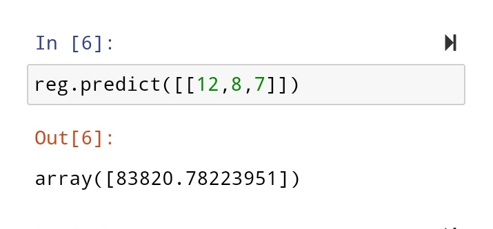 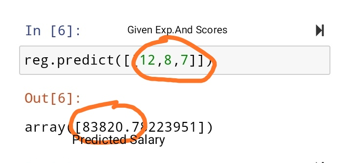The datasets show us about the worker's experience,scores and salaries.We see that each worker has different salaries.
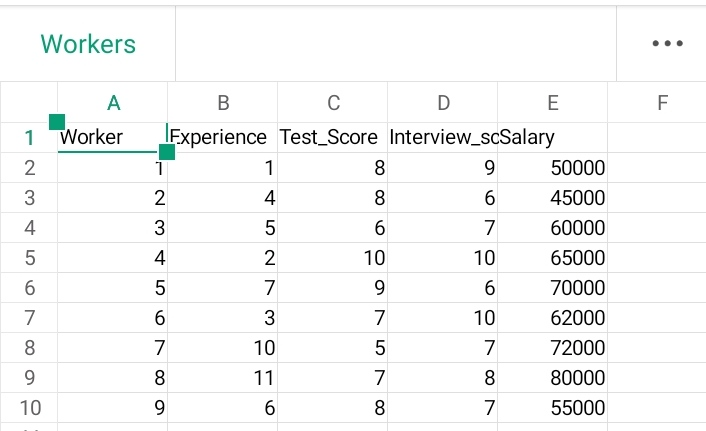Based on the graph below it shows that the workers are different interms of oral and test scores.
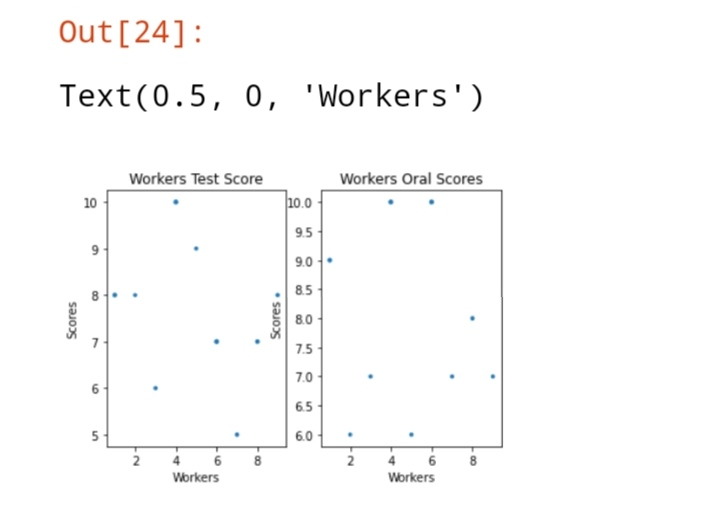 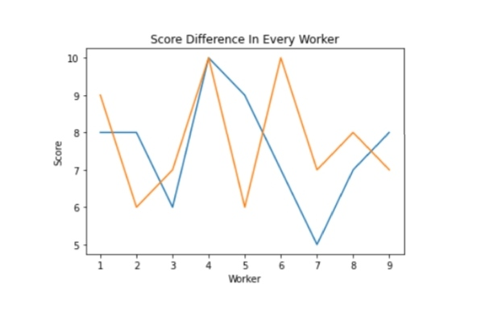Conclusion: Therefore I conclude that the if a Worker has higher Experienc number their is a possibility that he/she will got a higher salary than the lower Experience Worker based on the data.
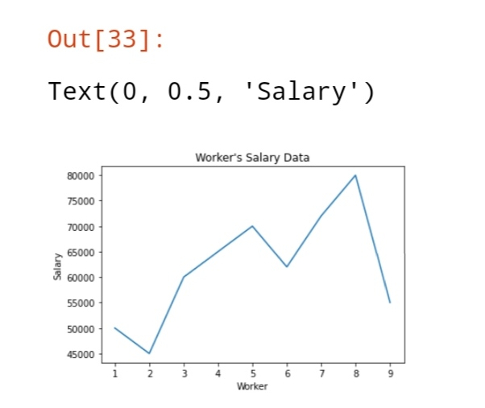 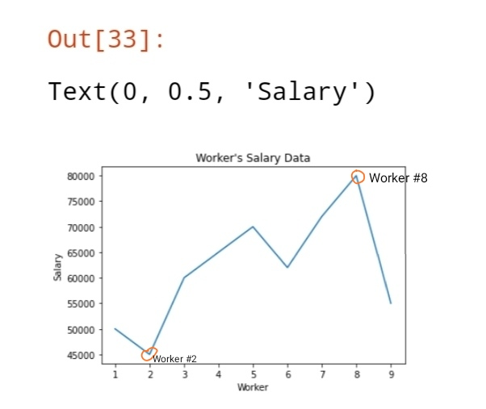Worker # 2 Stats are Experience:4 ,Score Total: 14/20 Salary:45,000
Worker # 8 Stats are Experience:11, Total Score:15/20 ,Salary: 80,000